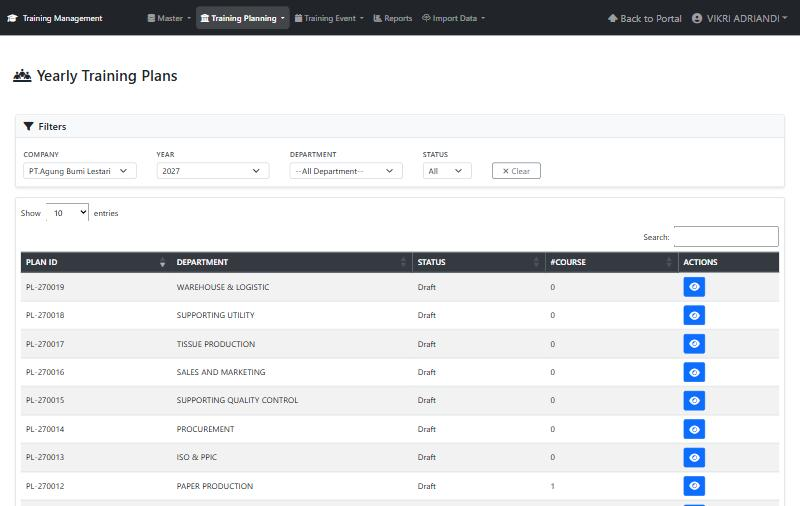
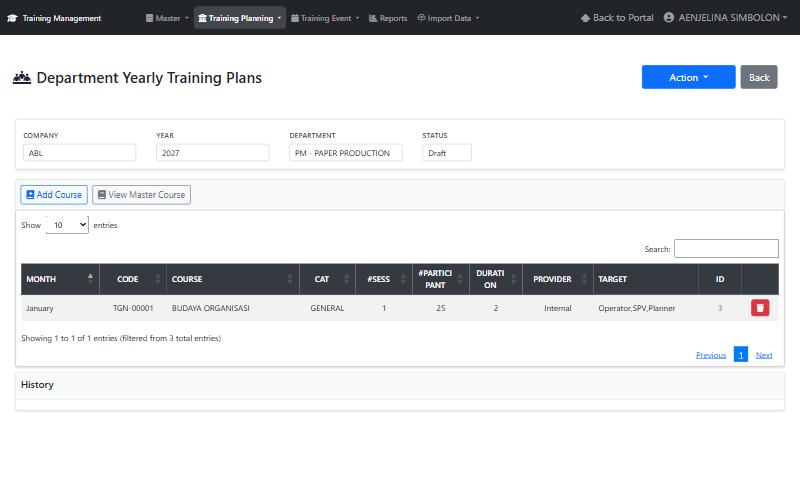
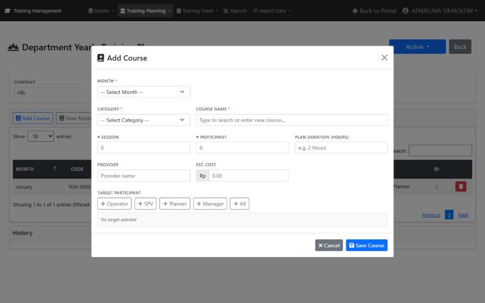
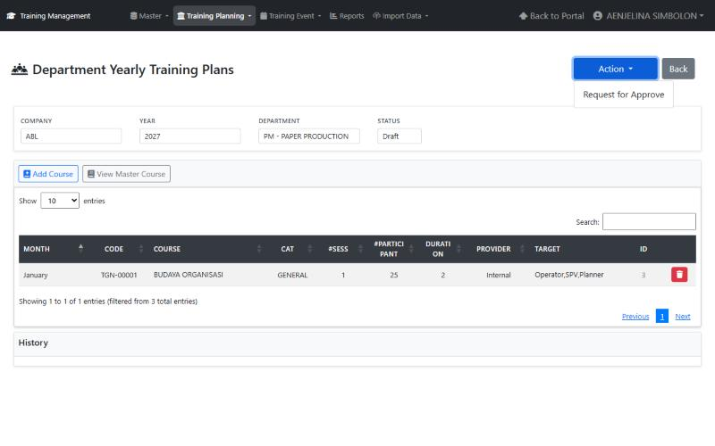
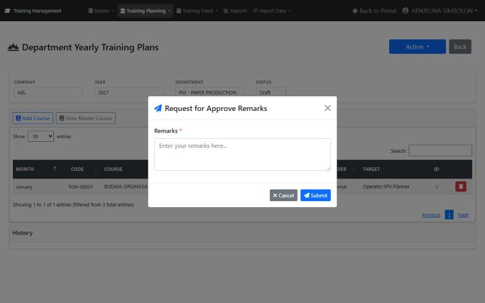

Manual Book — Training Plan
Manual ini menjelaskan cara menyusun dan mengajukan rencana training tahunan per departemen (Yearly Training Plan) di Training Management System ABL/NKM.
1. Alur kerja
Plan dibuat per departemen untuk satu tahun dan dinomori PL-xxxxxx. Menu ada di Training Planning → Plans.
- Buka plan departemen Anda pada tahun yang dipilih. Plan baru berstatus Draft.
- Tambah course ke plan: bulan, kategori, course, jumlah sesi, peserta, durasi, provider, estimasi biaya, dan target peserta.
- Ajukan dengan Action → Request for Approve, isi Remarks, lalu Submit.
- Approver memilih Approve atau Reject (Remarks wajib). Riwayatnya tercatat di bagian History.
Status plan pada filter: Draft, Pending, Approved, Canceled, Rejected.
2. Daftar Yearly Training Plans
Buka Training Planning → Plans. Daftar yang tampil mengikuti hak akses akun Anda.
- Pilih filter Company, Year, Department, dan Status; Clear mengembalikan filter.
- Gunakan kotak Search dan Show entries untuk mencari dan mengatur jumlah baris.
- Baca kolom Plan ID, Department, Status, #Course (jumlah course di plan itu).
- Klik tombol biru bergambar mata pada kolom Actions untuk membuka detail plan.

3. Detail plan dan mengelola course
Halaman Department Yearly Training Plans menampilkan Company, Year, Department, dan Status plan, lalu daftar course yang sudah direncanakan: Month, Code, Course, Cat, #Sess, #Participant, Duration, Provider, Target, dan ID. Bagian History di bawah tabel mencatat riwayat approval. Pada plan yang boleh Anda edit, tombol Add Course, Action, dan ikon hapus merah di baris course aktif.

Menambah course
- Klik Add Course.
- Isi form berikut. Tanda * wajib diisi.
| Field | Keterangan |
|---|---|
| Month * | Bulan pelaksanaan rencana |
| Category * | Kategori training |
| Course Name * | Ketik untuk mencari course master, atau ketik nama baru bila course belum ada |
| # Session | Jumlah sesi |
| # Participant | Perkiraan jumlah peserta |
| Plan Duration (Hours) | Durasi rencana dalam jam, mis. 2 |
| Provider | Penyelenggara (Internal / nama vendor) |
| Est. Cost | Estimasi biaya (Rp) |
| Target Participant | Klik + Operator, + SPV, + Planner, + Manager, atau + All; pilihan tampil di daftar bawahnya |
- Klik Save Course. Course muncul di tabel plan dan kolom #Course di daftar plan bertambah. Cancel menutup dialog tanpa menyimpan.

Menghapus course
Klik ikon tempat sampah merah di kolom paling kanan baris course. Bila kolom itu hanya berisi tanda —, plan sedang tidak dapat Anda ubah. Tombol View Master Course membuka daftar course master sebagai referensi.
4. Pengajuan dan approval plan
Semua aksi workflow dilakukan dari tombol Action (kanan atas halaman detail plan).
- Klik Action. Pada plan Draft, pengaju melihat aksi Request for Approve. Approver melihat Approve / Reject. Aksi yang abu-abu tidak tersedia untuk Anda pada status plan saat ini.

- Dialog Remarks terbuka. Isi kolom Remarks (wajib, tanda *). Remarks yang kosong ditolak.
- Klik Submit. Tombol berubah menjadi Submitting... lalu muncul notifikasi hasil; Cancel menutup dialog tanpa mengirim.
- Periksa status plan di bagian atas halaman dan riwayat pada bagian History.

Tombol Action tidak ditampilkan pada plan yang sudah berstatus final. Bila plan ditolak (Rejected), baca alasan penolakan pada History, perbaiki isi plan, lalu ajukan ulang.
5. Pemecahan masalah
| Gejala | Penyebab | Tindakan |
|---|---|---|
| Add Course atau Action abu-abu | Akun tidak punya hak edit/aksi pada plan itu (mis. role TC, atau plan departemen lain), atau status plan tidak mengizinkan | Login dengan akun departemen yang bersangkutan; hubungi TC/HRD bila seharusnya berwenang |
| Pesan You are not authorized to modify this plan. | Server menolak perubahan karena hak akses | Sama seperti di atas |
| Course tidak muncul saat mencari | Course belum ada di Master Course | Cek menu Master → Course, atau ketik nama baru pada Course Name |
| Tabel kosong setelah memfilter | Filter Company/Year/Status tidak cocok | Klik Clear lalu pilih ulang |